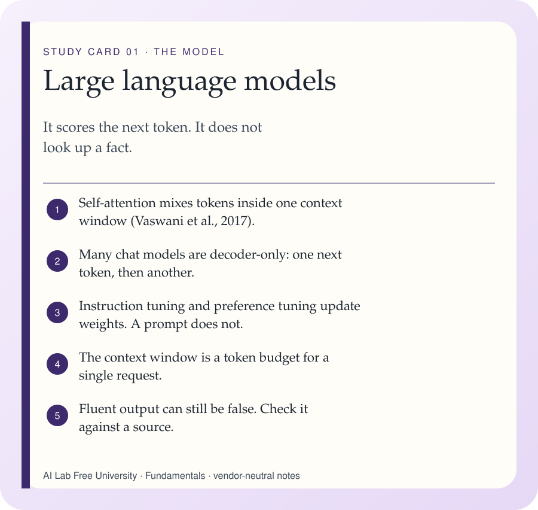
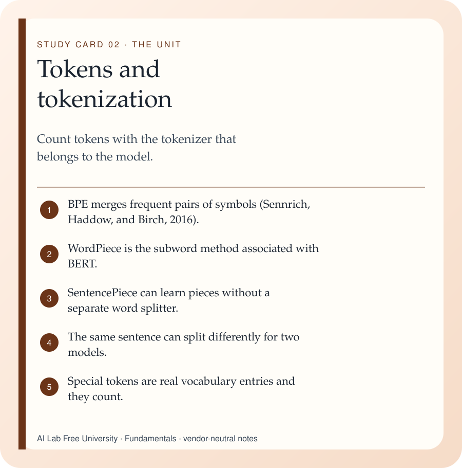
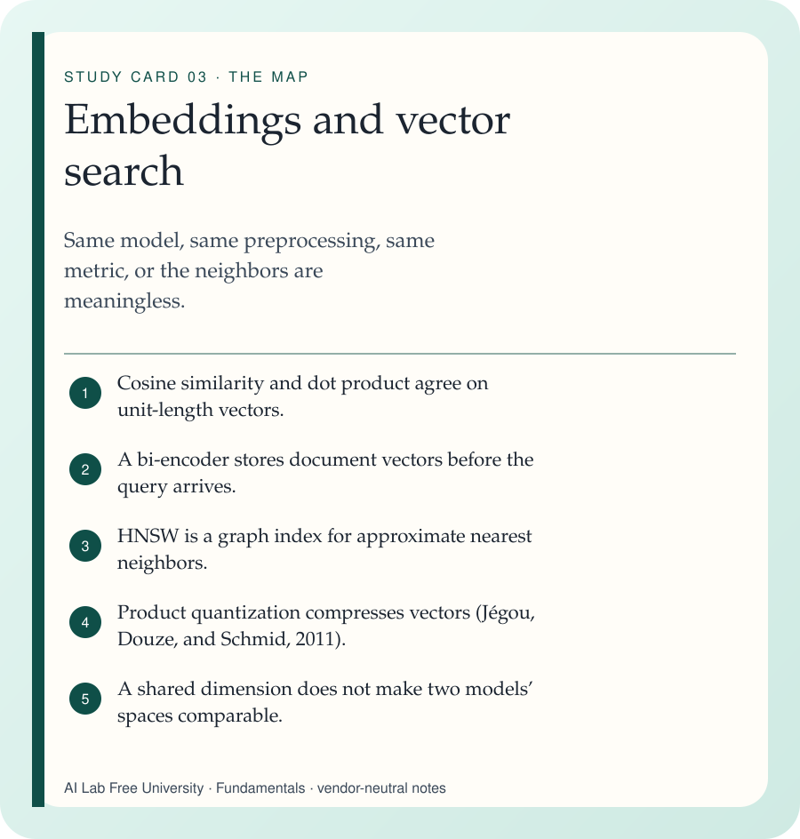
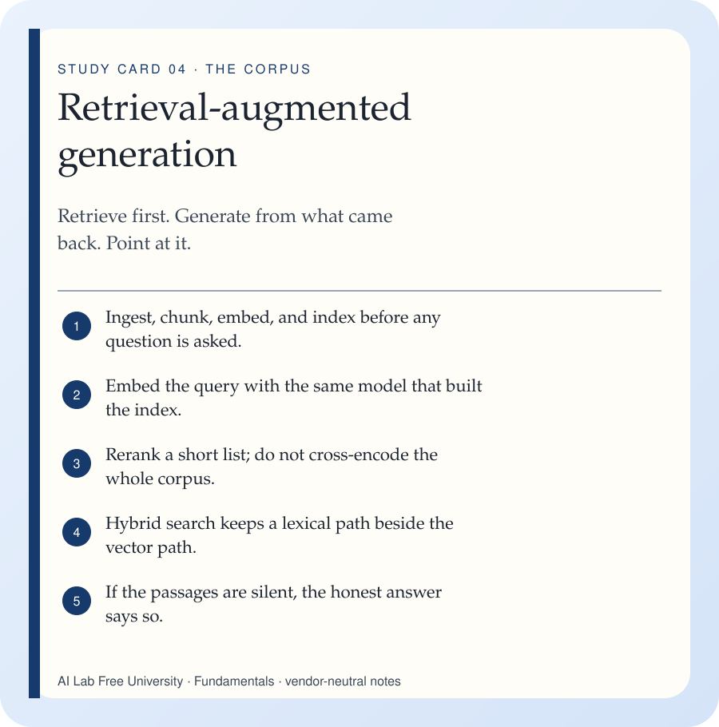
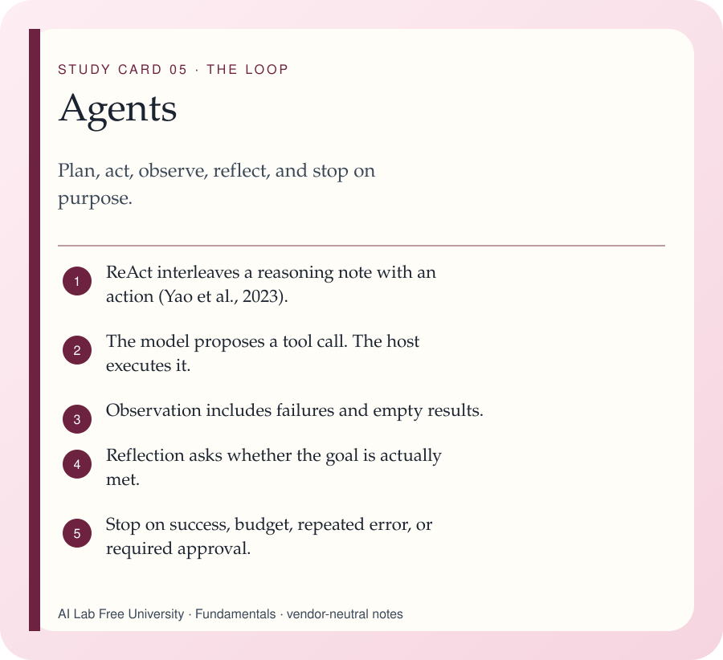
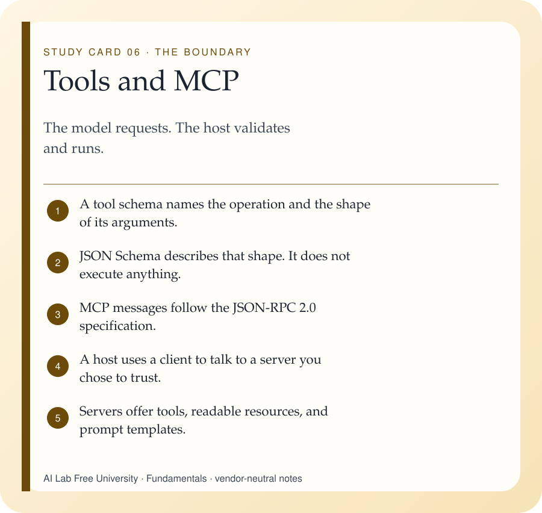
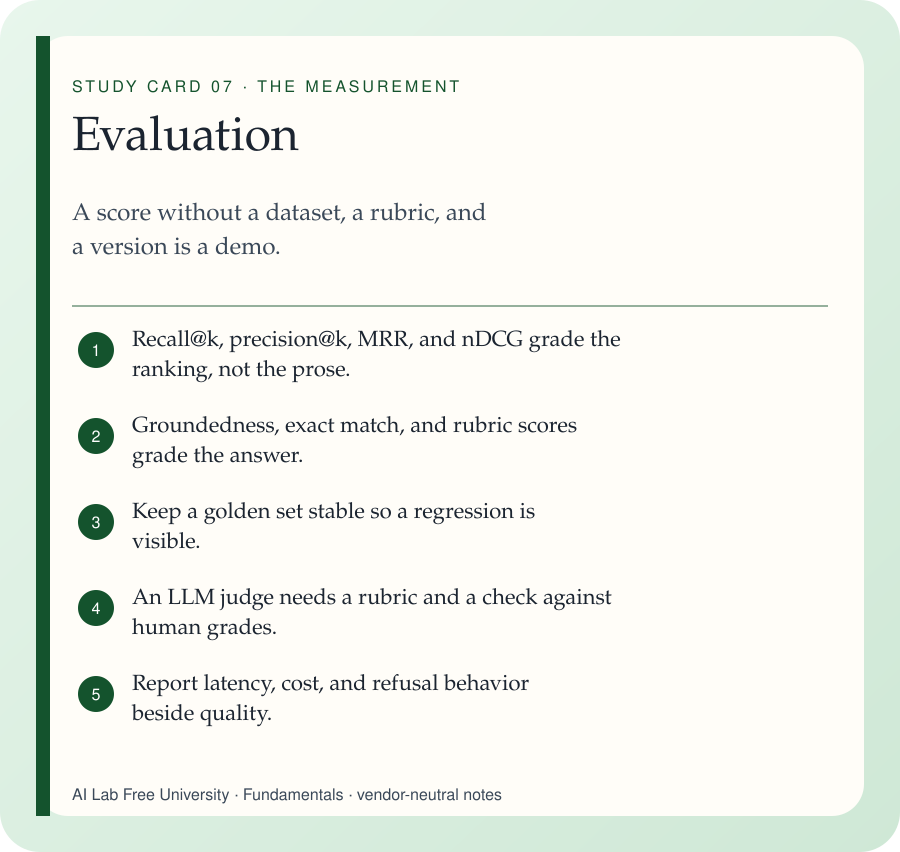

Offline study guide
AI engineering fundamentals
Seven ideas show up in almost every language-model system: the model, the tokens, the vectors, the retrieved passages, the action loop, the tool boundary, and the measurement.
These pages are vendor-neutral. They describe mechanisms that are stable across products: transformers, subword tokenization, embedding geometry, retrieval-augmented generation, tool-using loops, and evaluation. When a number depends on a model card — context length, price, benchmark rank — go to that card. This guide does not invent those numbers.
Concept cardsSeven ideas, each with a mechanism, an example, and a check.
Two flowsA RAG pipeline and an agent loop, as a diagram and as a list.
Quiz64 questions, explanations, a score, and progress kept on this device.
GlossarySearchable terms, from attention to WordPiece.
Cheat sheetThe same spine, packed for a second reading. A PDF sits beside it.
PDF cheat sheetThe print copy of the sheet, for a desk or a phone’s files app.
A way through
- Read one concept card and do the check at the bottom before you open the next.
- Trace the RAG diagram with a ten-line handbook you invent, using example.com as the source.
- Trace the agent loop and write the stop condition before you name a second tool.
- Take the quiz. Read the explanation even when you were right.
- Keep the glossary search and the cheat sheet open while you reread the card you missed.
The seven ideas

Large language models A large language model is a neural network, usually a transformer, trained to estimate which token comes next.
Tokens and tokenization A token is the piece a particular model reads and writes. It may be a word, part of a word, punctuation, or bytes.
Embeddings and vector search An embedding is a vector that places an input so a chosen kind of similarity becomes a geometric comparison.
Retrieval-augmented generation RAG retrieves passages from a corpus and asks the model to answer with those passages in view (Lewis et al., 2020).
Agents An agent is a loop: the model chooses an action, the program carries it out, the result comes back, and a stop rule ends the loop.
Tools and MCP A tool is a named operation with a schema. The Model Context Protocol is an open way for an application to reach servers that offer tools, resources, and prompts.
Evaluation Evaluation is a repeatable measurement of a system against a written task, a fixed set of examples, and a rubric.What sits next to what
| Idea | The unit it cares about | A failure you can name |
|---|---|---|
| Language model | Next-token probabilities | Fluent text that no source supports |
| Tokenizer | That model’s pieces | A context budget computed from word count |
| Embedding | One model’s vector space | Neighbors from a different model’s index |
| RAG | Retrieved passages | An answer with a citation that does not say it |
| Agent | A loop with a stop | Steps that continue after the budget is gone |
| Tool and MCP | A schema the host enforces | A tool result that grants itself a new permission |
| Evaluation | A fixed set and a rubric | A score on the same items you just edited |
Works named in this guide
- Vaswani et al., 2017. Attention Is All You Need.
- Sennrich, Haddow, and Birch, 2016. Neural Machine Translation of Rare Words with Subword Units.
- Kudo and Richardson, 2018. SentencePiece.
- Devlin, Chang, Lee, and Toutanova, 2019. BERT.
- Radford et al., 2019. Language Models are Unsupervised Multitask Learners.
- Bommasani et al., 2021. On the Opportunities and Risks of Foundation Models.
- Lewis et al., 2020. Retrieval-Augmented Generation for Knowledge-Intensive NLP Tasks.
- Karpukhin et al., 2020. Dense Passage Retrieval for Open-Domain Question Answering.
- Robertson and Zaragoza, 2009. The Probabilistic Relevance Framework: BM25 and Beyond.
- Malkov and Yashunin. Hierarchical Navigable Small World graphs. IEEE TPAMI, 2020.
- Jégou, Douze, and Schmid, 2011. Product Quantization for Nearest Neighbor Search.
- Holtzman, Buys, Du, Forbes, and Choi, 2020. The Curious Case of Neural Text Degeneration.
- Ouyang et al., 2022. Training language models to follow instructions with human feedback.
- Rafailov et al., 2023. Direct Preference Optimization.
- Yao et al., 2023. ReAct: Synergizing Reasoning and Acting in Language Models.
- Liu et al., 2023. Lost in the Middle: How Language Models Use Long Contexts.
- JSON-RPC Working Group. JSON-RPC 2.0 Specification. This is not an IETF RFC.
- JSON Schema, the vocabulary for describing JSON values.
- Model Context Protocol specification, at modelcontextprotocol.io.
- IETF RFC 3629. UTF-8, a transformation format of ISO 10646.
- OWASP Top 10 for Large Language Model Applications. Prompt injection.